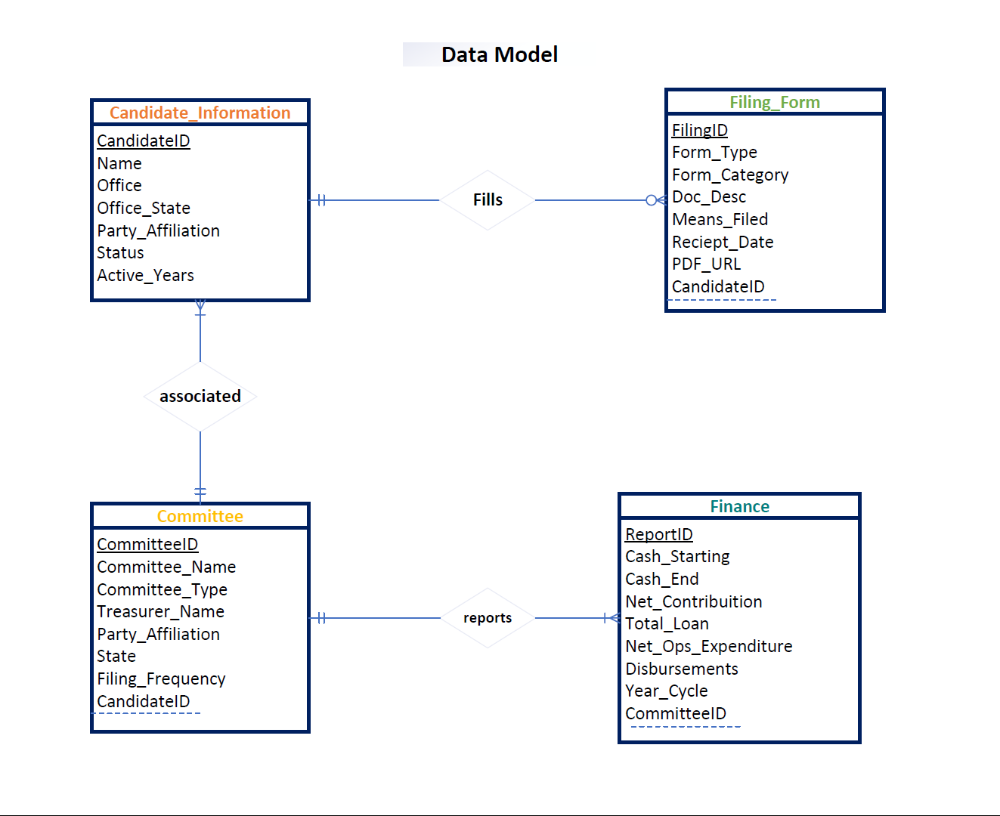

About Us
Project Details
The US Elections Insight Project is an information source for the United States election system. The mission of the project is to provide
election statistics, various committe's' Financial reports, and other useful information regarding the United States electoral system. By providing this information,
the project seeks to inform the people of the United States on what is the current status of their electoral system. We made use of html5, CSS3, JavaScript.
You can find information about candidates, committees and important dates related to elections.
API Details
We are make use of open.fec.gov APIs
to fetch data from following EndPoints
Candidate Details
candidate/{candidate_id}/
Committee Details
candidate/{candidate_id}/committees/
Financial Report
/committee/{committee_id}/totals/
Event Calendar
calendar-dates/
Learnings
- We gained knowledge about HTML5, CSS3 and JavaScript
- We implemented differents HTML components such as DatePicker, Forms, DropDowns, Image Sliders, etc
- We also learnt Team Collaboration.
- Gained insights on how a project is designed, coded, integrated and tested.
Data Model
| Group 16 | ||
|---|---|---|
 |
 |
|
| Himanshu Chandel | Riya Bansode | Rujuta Thorat |
Himanshu Chandel worked as a Data Analyst. He is a focused and diligent student,
who is currently pursuing Masters in Business Analytics and Information Systems at University of South Florida.He worked on the Data Model and Filing
Report page on this project. |
I am Riya Bansode. abcs dfv dsw vdf ddf tff ddd fgg dds ddg hhh ff |
I am Rujuta Thorat. I am a Graduate Student pursuing second semester of MS in Business Analytics and Information Systems from
University of South Florida.
I am a former Application Software Engineer with about 5+ years of experience working in Accenture Services Ltd. |